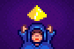
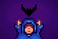
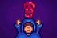

Suerte
La Suerte  es una estadística que afecta a diferentes aspectos del juego, como la probabilidad de encontrar geodas y la probabilidad de conseguir cofres del tesoro al pescar. Hay varias fuentes de suerte: la suerte diaria determinada por el juego, los bonificadores obtenidos al comer ciertos alimentos y bebidas, un Amuleto especial que da un pequeño impulso de suerte permanente y el Anillo de la suerte.
es una estadística que afecta a diferentes aspectos del juego, como la probabilidad de encontrar geodas y la probabilidad de conseguir cofres del tesoro al pescar. Hay varias fuentes de suerte: la suerte diaria determinada por el juego, los bonificadores obtenidos al comer ciertos alimentos y bebidas, un Amuleto especial que da un pequeño impulso de suerte permanente y el Anillo de la suerte.
Suerte diaria
El valor base de la suerte diaria es un número generado aleatoriamente de -0.1 (mala suerte) a 0.1 (buena suerte)[1] El valor aumenta en 0.025 con el Amuleto especial. El valor se utiliza de muchas maneras; Aunque parezca un porcentaje igual al 10%, en realidad se trata de manera diferente en cada situación y puede tener un efecto minúsculo o enorme dependiendo de la actividad.
La suerte diaria se puede comprobar haciendo clic con el botón derecho del ratón en la Televisión y seleccionando "La pitonisa". La pitonisa dará una indicación del modificador de estadísticas de suerte diaria. La suerte se determina al comienzo del día y no se ve afectada por la elección de ver el programa de televisión La pitonisa. La suerte diaria no cambia si se reinicia el día, pero puede cambiar repitiendo el día anterior.
Antes de revelar el mensaje de suerte, se muestra aleatoriamente uno de los siguientes mensajes (los dos primeros son específicos del género). No afectan la suerte de ninguna manera.
| “ | “Ah... Noto que tenemos un telespectador más. Un muchacho de... ¿Stardew Valley? ¡Bienvenido, bienvenido!” |
| “ | “Ah... Noto que tenemos una telespectadora más. Una muchacha de... ¿Stardew Valley? ¡Bienvenida, bienvenida!” |
| “ | “Ah... Sí, puedo oír cómo los espíritus me susurran algo.” |
| “ | “Bienvenidos otra vez al «Oráculo de Welwick»... Si buscáis conocer el futuro, habéis venido al lugar adecuado.” |
| “ | “Ajá.. Veo un brillo en mi orbe adivinatorio... ¡Una esquirla de conocimiento del futuro!” |
| “ | “Bienvenidos al Oráculo de Welwick... el ÚNICO programa que retransmite directamente la voz de los espíritus... para TI.” |
| Mensaje | Imagen en TV | Bonificación de estadísticas [2] |
|---|---|---|
| ¡Los espíritus están muy felices hoy! Harán todo lo que puedan para inundar a todos de buena fortuna. | ||
| Los espíritus están de buen humor hoy. Creo que tendrás un poco de suerte extra. |  | |
| Los espíritus se sienten neutros hoy. El día está en tus manos. | 
|
|
| Qué raro. Los espíritus están totalmente neutros hoy. |
|
|
| Los espíritus están algo molestos hoy. No tendrás a la suerte de tu parte. Los espíritus están ligeramente alterados hoy. No tendrás a la suerte de tu parte. |
 | |
| Los espíritus están muy descontentos hoy. Harán todo lo que puedan para complicarte la vida. |  |
Amuleto especial
Después de leer la Nota Secreta #20 y resolver el rompecabezas representado, el jugador es premiado con un Amuleto especial que aumenta permanentemente la Suerte diaria en 0.025.
Efectos de la suerte diaria
La suerte diaria afecta a lo siguiente:
- Minería
- Posibilidad de descubrir escaleras rompiendo rocas mientras se Mina.
- Posibilidad de caída Geoda y Carbón de las rocas.
- (La suerte no aumenta la probabilidad de recibir minerales y artefactos raros al romper geodas. Estos resultados dependen únicamente del archivo guardado y de la secuencia en la que se rompen las geodas).
- Posibilidad de encontrar Piedra de gema y piedras místicas en Las minas o Caverna Calavera.
- Probabilidad de que aparezcan cajas en Las minas.
- Posibilidad de encontrar salas del tesoro en la Caverna Calavera.
- Cantidad de Oro y objetos perdidos al morir en Las minas o Caverna Calavera.
- Probabilidad de encontrar Piedras Radioactivas en Las minas (mientras el Altar del desafío está activo) o Caverna Calavera ((mientras la Invasión en Caverna Calavera está activa).[3]
- Otro
- Probabilidad de que aparezcan Cofres del tesoro mientras se Pesca.
- Posibilidad de obtener objetos especiales (p.ej., Guja de Neptuno, Esquirla prismática, Anillo de iridio).
- Posibilidad de duplicar el número de cultivos producido en la cosecha. Funciona para cualquier cultivo, y se reproduce un efecto de sonido único de "dwoop" si esto ocurre como resultado de un control basado en la suerte.[4]
- Deja caer la probabilidad de Pluma de pato y Pata de conejo de los animales.
- Cantidad de madera que cae de los árboles.
- Calidad y número de menas obtenidas del bateo.
- Posibilidad de obtener un segundo objeto (además de la mena) al realizar un bateo.
- Posibilidad de obtener artículos de los cubos de basuras y la posibilidad de que el artículo no sea basura.
- Posibilidad de que el cónyuge esté celoso después de darle un regalo a otro candidato al matrimonio con el que el jugador también está saliendo actualmente.
- Resultados de jugar a las tragaperras en el Casino.
- Cantidad de relámpagos durante una tormenta (a mayor suerte, aumenta la cantidad).[5]
- Probabilidad de que un árbol sea golpeado por un rayo (a mayor suerte disminuye la posibilidad).[5]
Bonificadores de suerte
Los bonificadores de la suerte son bonificaciones temporales que se obtienen al consumir ciertas comidas y bebidas o al usar el Anillo de la suerte. Solo un bonificador del derivado de bebidas y un bonificador del derivado de comidas pueden estar activos en un momento dado. Un bonificador de +2 por ejemplo, puede tener efectos similares a un valor de suerte diaria de 0.1, aunque se trata de manera diferente en cada situación y puede tener un efecto minúsculo o enorme dependiendo de la actividad.
La siguiente comida y bebida proporciona un bonificador de suerte temporal:
| Imagen | Nombre | Descripción | Ingredientes | Energía / Salud | Bonificadores | Duración | Origen receta | Precio de venta | |||
|---|---|---|---|---|---|---|---|---|---|---|---|
| Pudding de plátano | Un postre cremoso con un increíble aroma tropical. | ||||||||||
| Anguila frita | Grasienta pero con mucho sabor. |
|
|||||||||
| Refresco de jengibre | Un refresco picante conocido por su efecto calmante en el estómago. | Tienda del duende en el volcán en la Isla Jengibre ( |
|||||||||
| Almuerzo de la suerte | Un almuerzo muy especial. |
|
|||||||||
| Sopa de calabaza | La preferida de la temporada. |
|
|||||||||
| Cóctel de gambas | Un aperitivo suntuoso hecho con gambas frescas. |
|
|||||||||
| Anguila picante | ¡Pica mucho! Ten cuidado. |
|
|||||||||
| Caramelo mágico | Un raro y poderoso caramelo preparado con la energía de un fragmento prismático. | N/A | N/A | ||||||||
| Gelatina de cueva | Una gelatina rara que se encuentra en lagos subterráneos. | N/A | N/A |
El siguiente anillo da una bonificación de suerte:
| Imagen | Nombre | Descripción | Efecto | Obtención | Ingredientes | Precio de Compra | Precio de Venta |
|---|---|---|---|---|---|---|---|
| Anillo de la suerte | Se dice que el emblema lunar da buena suerte al portador. | Aumenta la |
Cae como objeto especial en la Caverna Calavera, o rara vez al hacer un bateo. | N/A | N/A |
Efectos de Bonificación de suerte
El bonificador de suerte total se trata por separado de la suerte diaria total, y los efectos de los dos tipos de suerte no son automáticamente los mismos; Tanto los tipos de eventos afectados por las bonificaciones de suerte como la magnitud del efecto pueden ser diferentes.
Las diferencias conocidas entre la suerte diaria y los bonificadores de suerte incluyen:
- Las posibilidades de recibir Pluma de pato y una Pata de conejo no mejoran con los bonificadores de suerte.
- Para el contenido de los Cofres del tesoro pescando, un bonificador de suerte no mejora las posibilidades de objetos especiales. En cambio, aumenta la posibilidad de obtener el doble de recursos y gemas. También permite que aparezcan anillos estándar (Anillo brillante, Anillo magnético) en lugar de anillos pequeños (Pequeño anillo brillante, Pequeño anillo magnético).
- Al romper piedras, las posibilidades de obtener Fragmentos de cenizas, Fragmentos de huesos, Arcilla, Piedra, y todos las Menas dependen del nivel Minería del jugador y de los bonificadores de suerte, pero no de la suerte diaria[6].
- El Golpe crítico de arma aumenta con los beneficios de suerte, pero no con la suerte diaria[7].
- Las posibilidades de activar el Anillo de Yoba[8] o Anillo del guerrero[9] aumentan con los bonificadores de suerte, pero no con la suerte diaria.
- Las posibilidades de encontrar ciertos botines modificados de monstruos, como la Semilla de caoba, el Alma galáctica, y la Gema Qi dependen de los bonificadores de suerte, pero no de la suerte diaria[10].
Referencias
- ↑ Véase Game1::_newDayAfterFade en el código del juego.
- ↑ Véase Objects.TV::getFortuneForecast en el código del juego.
- ↑ Véase Locations.MineShaft::chooseStoneType en el código del juego.
- ↑ Véase Crop::Harvest en el código del juego.
- ↑ 5,0 5,1 Véase Utility::performLightningUpdate en el código del juego.
- ↑ Véase StardewValley.GameLocation::breakStone en el código del juego.
- ↑ Véase StardewValley.GameLocation::damageMonster en el código del juego.
- ↑ Véase StardewValley.Farmer::takeDamage en el código del juego.
- ↑ Véase StardewValley.Objects.Ring::onMonsterSlay en el código del juego.
- ↑ Véase StardewValley.GameLocation::monsterDrop en el código del juego.
Historial
- 1.3.27: Se ha añadido oficialmente un Amuleto especial al juego. Salas del tesoro agregadas a la Caverna Calavera, que se ven afectadas por la suerte.
- 1.4: Introducido Caramelo mágico. El aumento de suerte del Amuleto especial ha cambiado a 0.025 estáticos. Dar un regalo a los NPC con los que se puede salir ya no pone celoso al cónyuge del jugador a menos que esté saliendo con él.
- 1.5: Introducido el Anillo de la suerte, Pudding de plátano, y el Refresco de jengibre.
| Habilidades y Estadísticas | |
|---|---|
| Habilidades | Agricultura • Combate • Minería • Pesca • Recolección |
| Estadísticas | Ataque • Daño crítico • Defensa • Golpe crítico • Inmunidad • Magnetismo • Peso • Suerte • Velocidad |